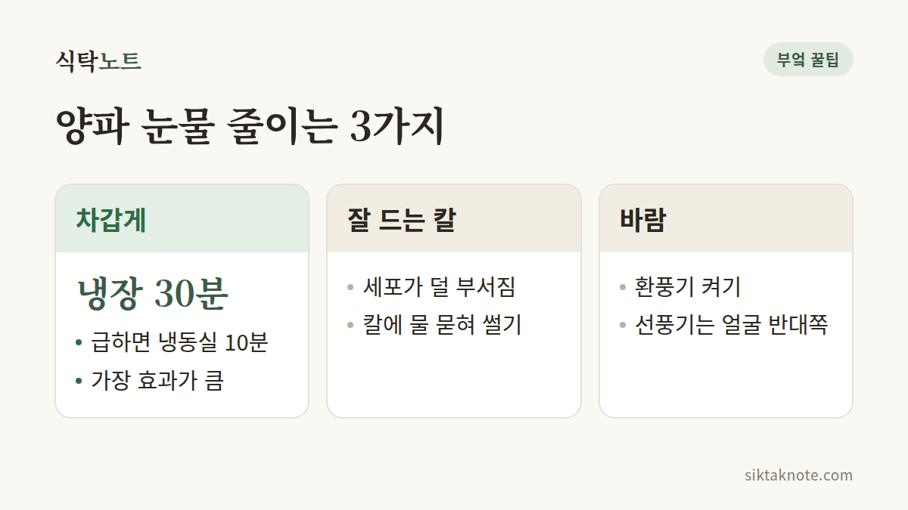

양파 썰 때 눈물 안 나게 하는 법

3줄 요약
- 썰기 전에 냉장고에 30분, 급하면 냉동실에 10분만 넣어 두세요.
- 칼이 잘 들면 눈물이 훨씬 덜 나요.
- 환풍기를 켜거나 선풍기를 약하게 틀어 두는 것도 도움이 돼요.

눈물 줄이는 첫 번째는 차갑게
양파 하나 썰었을 뿐인데 눈물 콧물이 줄줄 나서 칼질이 자꾸 끊기죠. 가장 확실한 건 양파를 미리 차갑게 만들어 두는 거예요. 썰기 전에 냉장고에 30분 이상 넣어 두고, 급할 땐 냉동실에 딱 10분만 넣어 보세요. 온도가 낮으면 눈물 나게 하는 성분이 공기 중으로 덜 퍼지거든요. 껍질째 넣어 두었다가 꺼내서 바로 벗기고 썰면 돼요. 더운 계절엔 부엌 온도가 높아서 성분이 더 쉽게 날아오르니 냉장 시간을 넉넉히 잡아 주세요. 꺼낸 양파 겉에 물방울이 맺혔다면 키친타월로 닦고 썰어요.

물과 바람을 내 편으로
껍질 벗긴 양파를 찬물에 5분쯤 담갔다 썰거나, 칼에 물을 묻혀 가며 썰어도 도움이 돼요. 눈을 자극하는 성분이 물에 녹아서 공기 중으로 덜 나오는 덕분이에요. 생양파로 먹을 때는 이렇게 하면 매운맛도 조금 줄어요. 다만 오래 담가 두면 양파의 아삭함과 풍미가 빠지니 길게 두지는 마세요.
환풍기를 켜거나 선풍기를 약하게 틀어 바람이 얼굴 반대쪽으로 가게 해 두는 것도 좋아요. 올라오는 성분이 눈에 닿기 전에 날아가 버리니까요. 물에 담갔다 꺼낸 양파는 표면이 미끄러우니, 물기를 한 번 닦고 도마 밑에 젖은 행주를 깔아 두면 칼질이 안전해요.

눈이 매운 이유
양파를 썰면 세포가 부서지면서 황 성분이 섞인 휘발성 물질이 나와요. 이 물질이 눈에 닿으면 눈물샘을 자극하고요. 온도가 낮을수록 덜 날아오르기 때문에, 차갑게 만드는 방법이 제일 잘 듣는 거예요.
양파 세포 속에는 평소에 이 성분의 재료와 효소가 따로 들어 있어요. 칼날에 세포가 터지면 둘이 만나 반응이 일어나면서 눈을 맵게 하는 가스가 만들어지는 거죠. 이 가스는 물에 잘 녹는 성질이 있어서, 물을 활용하는 방법이 도움이 돼요.
칼과 냉동실, 이것만 조심해요
칼이 무디면 양파가 썰리는 게 아니라 짓눌리면서 세포가 더 많이 부서져요. 그만큼 자극 성분도 많이 나오니, 칼만 잘 갈아 둬도 차이가 커요. 작은 과도보다는 날이 길고 잘 드는 식칼이 한 번에 쓱 썰기 좋아요.
양파를 한꺼번에 여러 개 썰어야 할 땐 냉장고에서 두세 개씩만 꺼내 쓰세요. 꺼내 두면 금세 실온으로 돌아가서 차갑게 해 둔 효과가 줄어들거든요.
냉동실에 너무 오래 두면 양파 조직이 물러져서 식감이 떨어져요. 10분 안팎이면 적당해요.
썰 때는 이렇게 해 보세요
양파를 반으로 갈라 단면이 도마에 닿게 눕히면 안정적이라 칼질이 빨라져요. 톱질하듯 여러 번 문지르기보다 칼을 앞으로 밀면서 한 번에 썰어 주세요. 얼굴은 도마에서 너무 가깝지 않게 떨어뜨리고, 한 번에 쓸 만큼만 꺼내서 써요. 안경을 쓰면 가스가 눈에 덜 닿아서 도움이 된다고 알려져 있어요. 다 썰고 나면 도마와 칼을 바로 씻어서 남은 가스가 부엌에 퍼지지 않게 해 주세요. 잘게 다져야 할 땐 세포가 더 많이 부서져서 눈이 더 매워요. 이럴수록 차갑게 해 두기와 환기를 꼭 챙기세요.
그래도 눈이 맵다면
사람마다, 양파마다 달라서 한 가지로 안 될 수 있어요. 냉동실은 효과를 잘 못 느꼈다는 이야기도 있으니, 냉장하기와 잘 드는 칼, 환기를 함께 쓰면 한결 나아요.
눈이 따가울 땐 손으로 비비지 마세요. 손에 양파 성분이 묻어 있어서 더 따가워져요. 손을 먼저 씻고, 깨끗한 물로 눈을 헹궈 주세요. 눈이 너무 따가울 땐 눈을 감고 계속 썰지 말고 칼을 내려놓고 잠깐 쉬었다 하세요. 눈을 감은 채 칼질하면 손을 다치기 쉬워요. 따가움이 오래 가거나 눈이 계속 붉다면 안과에서 진료를 받아 보세요.
쓰고 남은 양파는 밀폐 용기에 담아 냉장하고 되도록 빨리 쓰세요.
방법이 많아서 고르기 어렵다면 차갑게 만드는 것부터 시작해 보세요. 가장 큰 차이가 느껴질 거예요.